측량및지형공간정보기사 (2013-06-02 기출문제)
1과목: 측지학 및 위성측위시스템
1. 우리가 일상적으로 사용하는 평균 태양시 단위로 1항성시(sidereal time)는?
- 24시간 3분 5.06초
- 23시간 56분 4.09초
- 12시간 46분 5초
- 11시간 48분 26.4초
(정답률: 84%)

2. GPS 반송파 상대측위 기법에 대한 설명 중 옳지 않은 것은?
- 전파의 위상차를 관측하는 방식으로서 정밀측량에 주로 사용된다.
- 오차 보정을 위하여 단일차분, 이중차분, 삼중차분의 기법을 적용할 수 있다.
- 수신기 1대를 사용하여 모호 정수를 구한 뒤 측위를 실시한다.
- 위성과 수신기간 전파의 파장 개수를 측정하여 거리를 계산한다.
(정답률: 81%)
3. P코드의 특성에 대한 설명으로 옳지 않은 것은?
- L1 신호에만 실려서 들어온다.
- P코드는 비트율이 높아 의사거리의 정확도가 높다.
- P코드는 10.23Mbps의 비트율을 가지며, C/A코드는 1.023Mbps의 비트율을 가진다.
- P코드는 주기의 길이 때문에 P코드 전체를 이용한 측위는 불가능하다.
(정답률: 83%)
4. 인공위성 궤도의 섭동(perturbation)에 영향을 미치는 요인이 아닌 것은?
- 지구중력장
- 인공위성의 크기
- 달과 태양의 인력
- 태양의 복사각
(정답률: 68%)
5. 자자기의 3요소에 대한 설명으로 옳지 않은 것은?
- 자기장의 수평분력은 진북방향성분과 동서방향성분으로 나눌 수 있다.
- 지자기의 3요소는 복각, 편각, 수평분력이다.
- 편각은 수평분력과 진북이 이루는 각이다.
- 복각은 전자장과 연직분력이 이루는 각이다.
(정답률: 65%)
6. 구면삼각형의 면적이 1377km2, 지구의 곡률반지름이 6370㎞ 일 때 구과량은?
- 7″
- 16″
- 23″
- 30″
(정답률: 79%)
7. 우리나라의 좌표계(한국측지계)가 세계측지계로 변경된 후 설명으로 틀린 것은?
- 모든 지도를 좌표변환 없이 세계측지계 기준으로 재제작 하여야 한다.
- 법령에 의한 지표상의 위치는 해당법령을 개정하여 그 수치를 변경하여야 한다.
- 지상목표물의 위치를 수치(좌표)상의 변화(평행이동)만 있고 실제 지형, 지물의 위치 변동은 없다.
- GPS 측량성과를 변환 과정 없이 직접 사용할 수 있다.
(정답률: 77%)
8. 다음에 열거한 GPS의 오차요인 중에서 DGPS기법으로 상쇄되는 오차가 아닌 것은?
- 위성의 궤도 정보 오차
- 전리층에 의한 신호지연
- 대류권에 의한 신호지연
- 전파의 혼신
(정답률: 67%)
9. 평균표고가 800m인 두 점의 거리가 3000.902m이라면 이 두 점에 대한 평균해수면 상의 거리는? (단, 지구는 반지름 R=6370㎞인 구로 가정)
- 3000.902m
- 3000.525m
- 3000.180m
- 2999.098m
(정답률: 74%)
10. 우리나라 수준원점의 높이로 옳은 것은?
- 32.6871m
- 26.6871m
- 15.6871m
- 0.0000m
(정답률: 64%)
11. 신속정지측위(rapid static positioning)에 대한 설명으로 옳은 것은?
- 신속하게 이동하여 측위하는 기법을 말한다.
- 수신기를 자동차에 탑재하여 이동하며 측위하는 것을 말한다.
- 짧은 시간 동안 수신된 데이터를 이용하여 측위하는 기법을 말한다.
- 일반적으로 단독측위 기법을 기반으로 한다.
(정답률: 68%)
12. 측지학에서는 중력을 나타내는 1 Gal과 같은 것은?
- 1㎏ · m / sec2
- 1㎏ · ㎝ / sec2
- 1㎝ / sec2
- 1m / sec2
(정답률: 71%)
13. GPS 신호 관측시 발생하는 대류층 지면과 관련된 대기의 요소가 아닌 것은?
- 온도
- 속도
- 습도
- 압력
(정답률: 74%)
14. 지자기에 대한 설명으로 옳지 않은 것은?
- 영년변화는 수백년을 주기로 나타나는 지자기의 변화이다.
- 지자기변화에는 주기적 변화의 불규칙 변화가 있다.
- 자기 폭풍은 단파 통신의 지장을 초래한다.
- 자기 폭풍의 주요 원인은 지진이다.
(정답률: 86%)
15. 측지측량에 의한 지각의 수평 이동량을 측정할 수 있는 방법이 아닌 것은?
- 수준측량
- 삼각측량
- 거리측량
- 삼변측량
(정답률: 68%)
16. GPS 단독측위에서 4개의 위성의 관측점 좌표 x, y에 대한 Cofactor 행렬의 대각선요소가 각각 σxx = 0.75, σyy = 1.13일 때 관측점의 수평정확도 저하율(HDOP)는?
- 0.85
- 1.36
- 1.51
- 1.88
(정답률: 75%)
17. 다음 중 지구자전의 영향이 아닌 것은?
- 지구상 물체에 원심력이 생긴다.
- 조석이 하루에 두 번 생긴다.
- 일조시간의 변화가 생긴다.
- 전향력이 생긴다.
(정답률: 48%)
18. 다음의 중력이상에 대한 설명으로 틀린 것은?
- 일반적으로 실측중력값과 계산식에 의한 이론적 중력값은 일치한다.
- 중력이상이 (+)이면 그 지점 부근에 무거운 물질이 있는 것으로 추정할 수 있다.
- 중력이상값은 실측중력값에서 이론중력 값을 뺀 값으로 계산된다.
- 중력이상으로 지표면 밑의 상태를 추정할 수있다.
(정답률: 71%)
19. 다음 중 관성항법장치(INS)에서 획득되는 관측치는?
- 거리
- 속도
- 절대위치
- 가속도
(정답률: 52%)
20. 도심지와 같이 장애물이 많은 경우 특히 증대되는 GPS 관측오차는?
- 궤도 오차
- 대기 굴절 오차
- 다중경로 오차
- 전리층 지연 오차
(정답률: 61%)
2과목: 응용측량
21. 터널의 천정에 두 점의 측점을 정하였을 때 기계고(IH)-1.45m, 시준고(h) -1.60m, 사거리(S) 42.50m, 연직각(상향) 15° 30′ 일 경우, 두 점의 고저차는?
- 8.31m
- 10.51m
- 11.51m
- 14.41m
(정답률: 61%)
22. 터널측량의 순서 중 중심선을 현지의 지표에 정확히 설치하고 터널 입구의 위치를 결정하는 단계는?
- 답사
- 예측
- 지표설치
- 지하설치
(정답률: 72%)
23. 곡선 시점까지의 추가거리가 550m이고 중심 말뚝 간격이 20m, 교각이 60°, 곡선반지름이 200m 일 때 종단현의 편각은?
- 2° 47′ 04″
- 2° 51′ 53″
- 2° 55′ ⑤″
- 2° 59′ 55″
(정답률: 41%)
24. 터널공사의 완성시에 실시되는 측량이 아닌것은?
- 중심선 측량
- 수준측량
- 단면측량
- 도벨설치측량
(정답률: 52%)
25. 유토곡선의 성질에 대한 설명으로 틀린 것은?
- 유토곡선이 하향인 구간은 성토구간이고, 상향인 구간은 절토구간이다.
- 유토곡선의 극대점은 성토에서 절토로 옮기는 점이고, 극소점은 절토에서 성토로 옮기는 점이다.
- 절토와 성토의 평균운반거리는 유토곡선토량 의 1/2점간의 거리로 한다.
- 평균운반거리는 절토부분의 중심과 성토부분의 중심 간의 거리를 의미한다.
(정답률: 49%)
26. 그림과 같은 삼각형 토지에서 BC(=55m) 위의 점 D와 AC(=40m) 위의 점 E를 연결하여 ΔABC의 면적을 2등분 할 때 AE의 길이는?
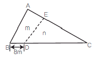
- 16.6m
- 17.7m
- 18.8m
- 19.9m
(정답률: 57%)
27. 아래와 같은 경관평가를 받는 시준선과 시설물 측선이 이루는 각(θ)의 법위로 가장 적합한 것은?
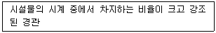
- 0° ＜ θ ＜ 10°
- 10° ＜ θ ＜ 30°
- 30° ＜ θ ＜ 60°
- 60° ＜ θ
(정답률: 51%)
28. 그림과 같은 형태의 넓은 면적의 토량을 구하는 식으로 옳은 것은? (단, 각각의 구역의 크기는 같고 h1, h2, h3, h4 는 표고를 의미함)
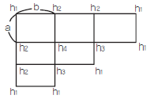
- V =
 (Σh1 + 3Σh2 + 2Σh3 + 4Σh4 )
(Σh1 + 3Σh2 + 2Σh3 + 4Σh4 ) - V =
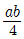
(Σh1 + 2Σh2 + 3Σh3 + 4Σh4 ) - V =
 (4Σh1 + Σh2 + 3Σh3 + 4Σh4 )
(4Σh1 + Σh2 + 3Σh3 + 4Σh4 ) - V =
 (3Σh1 + 2Σh2 + Σh3 + 4Σh4 )
(3Σh1 + 2Σh2 + Σh3 + 4Σh4 )
(정답률: 66%)
29. 해안선측량을 위한 방법과 거리가 먼 것은?
- 토털스테이션측량
- GPS측량
- 항공레이저측량
- 해저면영상조사
(정답률: 65%)
30. 완화곡선을 삽입하는 이유로서 옳은 것은?
- 캔트(cant)와 슬랙(slack)을 주기 위하여
- 직선과 곡선 구간의 변화에 따른 원심력의 급증에 의한 주행차량의 격동을 방지하기 위하여
- 곡선설치에 정확도를 향상 시키고 지거에 의한 설치가 용이하도록 하기 위하여
- 곡선 구간 진입에 의한 차량의 속도 저하를 방지하기 위하여
(정답률: 56%)
31. 수위표에 관한 설명으로 옳지 않은 것은?
- 수위표의 영점은 갈수위 이하까지 표시하고 사단은 평수위보다 조금 높게 측정할 수 있도록 한다.
- 수위표의 영점표고는 그 관측소의 수준기표로 부터 측정하고 수준기표의 표고는 부근의 국가수준점에 결부시킨다.
- 수위표에는 원칙적으로 5cm 단위의 눈금을 붙인다.
- 하구 부근이나 이수, 치수의 중요한 점, 또는 관측하기 불편한 곳에는 자기수위표를 설치한다.
(정답률: 46%)
32. 직선과 원곡선을 직접 접속할 경우에 비하여 그 사이에 완화곡선을 설치하는 경우 생기는 Y방향(주접선의 직각방향)의 길이를 무엇이라고 하는가?
- 이정량(shift)
- 접선편거
- 현편거
- 캔트(cant)
(정답률: 60%)
33. 축척 1:1000의 도면을 축척 1:500으로 잘못계산하여 10000m2의 면적을 얻었다면 실제 정확한 면적은?
- 2500m2
- 5000m2
- 20000m2
- 40000m2
(정답률: 60%)
34. 단곡선 설치에서 교점 부근에 하천이 있어 그림과 같이 A′, B′를 선정하여 α=38° 34′, β= 45° 46′,
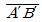
= 86.5m를 얻었다면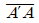
의 거리는? (단, 곡선의 반지름은 250m 이다.) (문제오류로 실제 시험에서는 모두 정답처리 되었습니다. 여기서는 1번을 누르면 정답처리 됩니다.)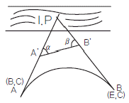
- 162.14m
- 163.14m
- 164.14m
- 165.14m
(정답률: 47%)
35. 해양에서 수심측량을 할 경우 음향측심 장비로 부터 취득한 수심의 보정 방법이 아닌 것은?
- 음속보정
- 조석보정
- 흡수보정
- 방사보정
(정답률: 57%)
36. 수심이 H인 하천의 유속 측정에서 수면으로부터 0.2H, 0.4H, 0.6H, 0.8H 깊이에서의 유속이 각각 0.565m/sec, 0.514m/sec, 0.450m/sec, 0.385m/sec 이었다면, 2점법에 의한 평균 유속은?
- 0.450m/sec
- 0.475m/sec
- 0.508m/sec
- 0.540m/sec
(정답률: 60%)
37. 하천의 수위 중 저수위에 대한 설명으로 옳은 것은?
- 1년을 통하여 355일, 이것보다 내려가지 않는 수위
- 1년을 통하여 275일, 이것보다 내려가지 않는 수위
- 1년을 통하여 185일, 이것보다 내려가지 않는 수위
- 1년을 통하여 125일, 이것보다 내려가지 않는 수위
(정답률: 66%)
38. 유량관측을 위한 수위관측 위치에 대한 설명으로 옳지 않은 것은?
- 불규칙한 흐름이 없고 수위변화가 확연히 일어나는 곳
- 하상변화가 작고 상하류가 약 100~200m 정도 직선인 곳
- 이동이나 유실, 파손되지 않고 침하, 매몰이 일어나지 않는 곳
- 평상시나 홍수시에도 관측이 편리한 곳
(정답률: 57%)
39. 원곡선 설치를 위한 조건이 다음과 같을 경우 원곡선 시점 (B.C.)으로부터 원곡선상 처음 중심점(P1)까지의 편각은?
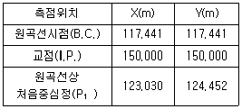
- 3° 26′ 20″
- 6° 26′ 20″
- 45° 00′ 00″
- 51° 26′ 20″
(정답률: 41%)
40. 클로소이드 공식으로 옳지 않은 것은? (단, R : 곡선반지름, L : 곡선길이, A : 파라메타, τ : 접선각)
- R = A2 / L
- L = 2τR
- τ= L2 / 2A2
- A = L2 / 2τ
(정답률: 37%)
3과목: 사진측량 및 원격탐사
41. 사진상의 주점이나 표정점 등을 인접 사진상에 옮기는 작업을 무엇이라 하는가?
- 투영
- 도화
- 표정
- 점이사
(정답률: 50%)
42. 원격탐사의 일반적인 영상처리 순서로 옳게 나열된 것은?
- 데이터 입력→ 변환처리→ 전처리→ 분류처리 → 출력
- 데이터 입력→ 전처리→ 변환처리→ 분류처리 → 출력
- 데이터 입력→ 분류처리→ 변환처리→ 전처리 → 출력
- 데이터 입력→ 분류처리→ 전처리→ 변환처리 → 출력
(정답률: 54%)
43. 다음 사진측량에 대한 설명으로 옳은 것은?
- 엄밀 수직 항공사진의 경우에는 주점, 연직점 및 등각점이 서로 일치한다.
- 등각점에서는 경사에 관계없이 연직사진의 축척과 같은 축척으로 된다.
- 주점에서 방사 왜곡량이 가장 크다.
- 흑백필름을 사용하는 경우 렌즈의 색수차는 발생하지 않는다.
(정답률: 52%)
44. 완벽한 수직사진에 있는 한 점의 사진좌표를 (x, y, z)이라고 하고, z축을 기준으로 k만큼 회전할 때 얻어진 사진좌표를 (xκ, yκ, zκ)라고 할 때, 이 사진좌표의 관계를 올바르게 나타낸 것은?
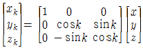
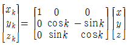
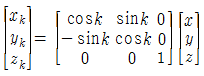
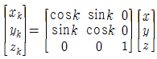
(정답률: 56%)
45. 초점거리 200㎜ 카메라로 평지를 1:12000 축척으로 촬영한 연직사진이 있다. 이 사진에 평지보다 비고 400m가 높은 고원이 일부 촬영되었다면 고원에서의 사진축척은?
- 1:5000
- 1:7500
- 1:10000
- 1:15000
(정답률: 54%)
46. 다음 수식은 어느 표정에 필요한 것인가? (단, (XG, YG, ZG)는 지상좌표, S는 축척, (r11, r12, … , r33)는 회전행렬, (xm, ym, zm)은 모델좌표, (XT, YT, ZT)는 원점이동량)
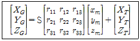
- 내부표정
- 외부표정
- 상호표정
- 절대표정
(정답률: 42%)
47. 한 쌍의 중복사진에 있어서 2개의 투영중심과 양사진의 대응되는 상점(像點)이 동일 평면 내에 있기 위한 필요충분 조건을 무엇이라 하는가?
- 공선조건
- 공면조건
- 수렴조선
- 회전변환조건
(정답률: 51%)
48. 지역 1, 2, 3에 대해서 LANDSAT-7의 3번(RED)과 4번(NIR)밴드의 화소값을 구한 결과가 아래와 같다. 각 지역의 정규화식생지수(NDVI)값으로 옳은 것은?
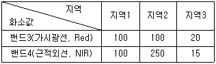
- 지역 1=0, 지역 2=0.43, 지역 3=-0.14
- 지역 1=0, 지역 2=-0.43, 지역 3=0.14
- 지역 1=1, 지역 2=2.5, 지역 3=0.75
- 지역1=1, 지역 2=0.44, 지역 3=1.33
(정답률: 56%)
49. 입체감을 얻기 위한 입체사진의 조건에 대한 설명으로 옳은 것은?
- 모델형성을 위한 두 매의 사진에서 사진축척이 서로 다른 것이 오히려 입체시가 양호하다.
- 기선고도비는 1에 가까울수록 좋다.
- 한 쌍의 사진을 활영한 카메라의 광축은 거의 동일평면에 있어야 한다.
- 2매의 사진에서 축척차가 10% 정도일 때 가장 효과적인 결과를 얻을 수 있다.
(정답률: 45%)
50. 표정점 선점에 관한 설명으로 옳지 않은 것은?
- 굴뚝과 같이 지표면보다 뚜렷하게 높은 곳에 있는 점이어야 한다.
- 상공에서 보이지 않으면 안된다.
- 가상점, 가상상을 사용하지 않도록 한다.
- 표정점은 X, Y, Z 가 동시에 정확하게 결정될 수 있는 점이 이상적이다.
(정답률: 60%)
51. 다음의 카메라 중 동일한 촬영고도에서 촬영했을 때 가장 많은 대상물을 포함할 수 있는 카메라는?
- 협각카메라
- 보통각카메라
- 광각카메라
- 초광각카메라
(정답률: 69%)
52. 항공사진 또는 위성영상의 기하보정 과정에서 최종 결과영상을 제작하는데 필요한 재배열(Resampling) 방법 중 원천영상자료의 화소값의 변경을 방지할 수 있고 가장 계산이 빠른 방법은?
- Non-Linear Interpolation
- Bilinear Interpolation
- Bicubic Interpolation
- Nearest-neighbor Interpolation
(정답률: 68%)
53. 축척 1:20000의 항공사진을 비행속도 216㎞/h로 촬영할 경우에 허용흔들림량을 사진상에서 0.01㎜로 한다면 최장노출시간은?
- 1/100초
- 1/200초
- 1/300초
- 1/400초
(정답률: 47%)
54. 동서 20㎞, 남북 40㎞의 직사각형 구역에서 항공사진 한 장의 입체모델에 찍힌 면적이 13.47km2이라면 이 지역에 필요한 사진매수는? (단, 안전율은 30%이다.)
- 45매
- 56매
- 67매
- 78매
(정답률: 48%)
55. 다음 중 원격탐사 영상을 이용하여 토지피복도를 제작할 때 가장 활용도가 높은 영상은?
- 적외선 영상(Infrared Image)
- 초미세분광 영상(Hyper-Spectral Image)
- 열적외선 영상(Thermal Infrared Image)
- 레이더 영상(Radar Image)
(정답률: 49%)
56. 2010년에 우리나라에서 개발하여 발사한 천리안위성(COMS)의 임무로 거리가 먼 것은?
- 통신중계
- 해양관측
- 선박감시
- 기상관측
(정답률: 63%)
57. 일괄적이고 자동적인 통계처리에 의해 영상을 분류하는 방법으로 영상의 DN(digitalnumber)값들 사이에 존재하는 특성집단 혹은 클러스터에 따라 픽셀을 몇 개의 항목으로 분류하는 방법은?
- 감독분류(supervised classification)
- 무감독분류(unsupervised classification)
- 최대우도법(maximum likelihood classifier)
- 최단거리분류법(minimum distance classifier)
(정답률: 39%)
58. 다음 중 공간을 불규칙한 삼각형으로 분할하여 생성된 공간자료구조의 일종으로 경사와 경사방향을 설정하고, 효율적으로 지형의 높낮 이와 음영을 표현할 수 있는 방법은?
- DEM(Digital Elevation Model)
- DGM(Digital Geographic Model)
- TIN(Triangulation lrregular Network)
- TRN(Triangulation Regular Network)
(정답률: 65%)
59. 사진좌표계를 결정하는데 필요하지 않은 사항은?
- 사진지표의 좌표
- 좌표변환식
- 주점의 좌표
- 연직점의 좌표
(정답률: 44%)
60. 카메라의 경사, 지표면의 기복을 수정하고 등고선을 삽입하여 집성한 사진지도는?
- 정사사진지도
- 조정집성사진지도
- 반조정집성사진지도
- 약조정집성사진지도
(정답률: 34%)
4과목: 지리정보시스템
61. 지형공간정보체계의 데이터베이스구조가 아닌것은?
- 관계(Relational)구조
- 계층(Hierarchical)구조
- 관망(Network)구조
- 3차원(3-Dimensional)구조
(정답률: 58%)
62. 다음 중 공간정보 파일 포맷 중에서 벡터 데이터 모델(Vector Data Model)과 거리가 먼 것은?
- geofile.dxf
- geofile.shp
- geofile.ngi
- geofile.img
(정답률: 55%)
63. ( )안에 알맞은 단어로 짝지어진 것은?
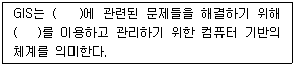
- 국토개발, 지형도
- 공간, 지리자료
- 지리정보, GPS
- 지도제작, 토지정보
(정답률: 50%)
64. GIS의 공간분석에서 선형의 공간객체 특성을 이용한 네트워크(Network) 분석 기능과 거리가 먼 것은?
- 도로나 하천 등 선형의 관거에 걸리는 부하의 예측
- 하나의 지점에서 다른 지점으로 이동시 최적 경로의 선정
- 창고나 보급소, 경찰서, 소방서와 같은 주요 시설물의 위치 선정
- 특정 주거지역의 면적 산정과 인구 파악을 통한 인구 밀도의 계산
(정답률: 70%)
65. SQL(Structured Query Language)에 대한 설명으로 옳지 않은 것은?
- 영어와 같은 일반 언어와 구조가 유사하여 배우고 이해하기 용이한 편이다.
- 단순한 질의 기능뿐만 아니라 완전한 데이터정의 기능과 조작 기능을 갖추고 있다.
- 광범위하게 사용되는 절차적 질의어(procedural query language)이다.
- 컴퓨터 시스템간의 이식성이 용이하다.
(정답률: 53%)
66. 벡터구조로서 지형데이터의 표현을 위한 위상을 갖추고 있는 수치표고자료의 표현방식은?
- 불규칙삼각망(TIN)
- 수치고도모형(DEM)
- 수치표면모형(DSM)
- 수치선형그래프(DLG)
(정답률: 57%)
67. 입력이 어느 하나라도 1이면 축력이 1이 되고, 입력이 모두 O일 때만 출력이 0이 되는 논리 연사자는? (단, 참은 1, 거짓은 0)
- OR
- AND
- NOT
- XOR
(정답률: 52%)
68. 다음의 도형 정보 중 차원이 다른 하나는?
- 절대 표고를 표시한 점
- 소방차의 출동 경로
- 분수선과 계곡선
- 도로의 중심선
(정답률: 54%)
69. 공간데이터 처리에 있어서 나누어진 항목들을 합쳐서 분류항목들을 줄이는 과정을 무엇이라 하는가?
- 재분류(reclassification)
- 일반화(generalization)
- 세분화(specification)
- 중첩(overlay)
(정답률: 66%)
70. 디지타이징에 의한 수치지도 제작 시 발생할 수 있는 오차유형이 아닌 것은?
- 종이지도 신축에 의한 위치 오차
- 세선화(Thinning) 과정에서의 형상 오차
- 선분 교차점에서의 교차 미달(Undershooting) 및 초과(Overshooting) 현상
- 인접 다각형의 경계선 중복부분에서의 갭(Gap) 발생
(정답률: 57%)
71. 수치지도의 등고선 레이어를 이용하여 수치지형모델을 생성할 경우 필요한 자료처리 방법은?
- 보간법
- 일반화 기법
- 분류법
- 자료압축법
(정답률: 70%)
72. 다음과 같은 데이터에 대한 위상구조 테이블로 적합한 것은?
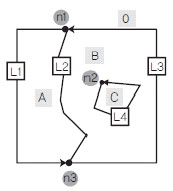
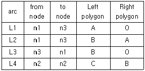
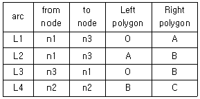
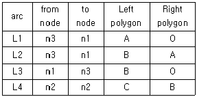
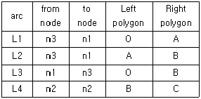
(정답률: 39%)
73. 공간객체 간의 상호 위치관계를 의미하며 이를 통해서 다양한 공간객체 간의 인접성(adjacency), 연결성(connectivity), 일치성(coincidence) 등을 파악할 수 있으며, 경로분석 및 공간분석에 이용되는 개념을 나타내는 것은?
- 지리정보시스템(Geographic Information System)
- 토폴로지(topology)
- 레이어(layer)
- 지오메트리(geometry)
(정답률: 46%)
74. 다음의 조건을 따르는 SQL문으로 알맞은 것은?
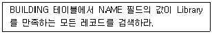
- SELECT BUILDING FROM “NAME” WHERE 'Library'
- SELECT BUILDING FROM “NAME” = 'Library'
- SELECT * FROM BUILDING WHERE “NAME” = 'Library'
- SELECT * FROM “NAME” = 'Library' WHERE BUILDING
(정답률: 48%)
75. 벡터 데이터 모델의 특징으로 옳지 않은 것은?
- 공간해상도에 좌우되지 않는다.
- 속성정보의 입력, 검색, 갱신이 용이하다.
- 실세계의 이산적 현상의 표현에 효과적이다.
- 항공영상, 위성영상 등 디지털 자료를 저장할 때 사용한다.
(정답률: 44%)
76. 절대적인 정확성과 정밀성을 지닌 공간 데이터는 존재하지 않으며 항상 오차를 포함하고 있다. 공간 데이터의 오차 발생 및 그 유형에 대한 설명으로 옳지 않은 것은?
- 일반적으로 공간 데이터에 나타나는 오차는 크게 원시자료, 데이터 수치화와 지도 편집 과정, 데이터 처리 과정과 분석단계에서 발생한다.
- 오차 발생 유형의 특성을 토대로 분류되는 오차로는 원래부터 잠재적으로 지니고 있는 내재적 오차(Inherent Errors)와 구축과정에서 발생하는 작동적 오차(Operational Errors)로 범주화 할 수 있다.
- 공간 데이터의 수집 단계에서 발생하는 오차는 일반적으로 그 다음 단계로 옮겨지면서 누적되지는 않는다.
- 서로 다른 출처, 포맷, 축척, 정확도 수준의 수치 데이터들이 하나의 시스템 환경에 통합되어 작동되기 때문에 상당한 오차가 내재되어 있음에도 불구하고 특별한 경우가 아니면 사용자들은 오차로 인한 문제점을 거의 알지 못하게 된다.
(정답률: 53%)
77. 지리정보시스템에서 입력된 공간자료와 속성자료를 동시에 이용한 연산을 통해 모델링을 실시하는 유형으로 가장 거리가 먼 것은?
- 화재발생 시 소방차 출동을 위한 최단거리 계산
- 도로설계 시 신설도로망을 중심으로 한 유력 상권의 분석
- 특정 지역을 기준으로 한 향(aspext)의 분석
- 납골당 건설 예정지 선정을 위한 적지 분석
(정답률: 56%)
78. 지형 표현 방법 중 불규칙삼각망 자료모형(TIN)에 대한 설명으로 옳은 것은?
- 표고값을 갖는 같은 크기의 격자들로 구성된 레이어이다.
- 지형 특성에 따라 자료의 적정 밀도가 변화한다.
- 중첩분석이 쉽고 호환성이 뛰어나 표고모형 중 가장 널리 쓰인다.
- 정사영상 제작에 적합하며 음영기복도 제작에는 부적합하다.
(정답률: 30%)
79. 지리정보자료의 내용이나 품질, 상태, 제작시점, 제작자, 소유권자, 좌표체계 등 특성에 관한 제반사항을 나타내는 부가자료를 무엇이라 하는가?
- 메타데이터
- 속성데이터
- 공간데이터
- 이력데이터
(정답률: 59%)
80. 그림은 10m 해상도의 DEM(Digital Elevation Model)의 격자를 나타낸다. 선형보간법에 의한 P점의 높이값은? (단, 격자간격은 10m×10m 이다.)
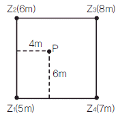
- 6.0m
- 6.2m
- 6.4m
- 6.6m
(정답률: 39%)
5과목: 측량학
81. 다각측량에서 각과 거리의 관측정확도가 동일할 때 거리관측오차가 100m에 대하여 ±4㎜라면 이것에 상응하는 각관측 오차는?
- ±4″
- ±8″
- ±10″
- ±25″
(정답률: 40%)
82. 축척 1:500 지형도를 기초로 하여 축척 1:2500의 지형도를 제작하고자 한다. 1:2500 지형도 1도엽은 1:500 지형도를 몇 매 포함한 것인가?
- 45매
- 40매
- 36매
- 25매
(정답률: 58%)
83. 국가수준기준면과 수준원점의 관계에 대한 설명으로 옳은 것은?
- 국가수준기준면과 수준원점은 일치한다.
- 제주도와 같은 섬에서도 국가수준기준면을 사용하여야 한다.
- 국가수준기준면으로부터 정확한 표고를 측정하여 수준원점을 설치한다.
- 국가수준기준면을 만들기 위해 수준원점을 기준으로 평균해면을 관측한다.
(정답률: 42%)
84. 전자파거리측량기(EDM)에서 발생되는 오차 중 거리에 비례하여 나타나는 것은?
- 위상차 측정오차
- 반사프리즘의 구심오차
- 반사프리즘 정수의 오차
- 변조주파수의 오차
(정답률: 36%)
85. 축척 1:5000 지형도에서 그림과 같이 주곡선상의 두 점 A, B 사이의 도상거리가 2㎝인 경우 이 두 점 사이의 실제 경사는?
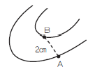
- 1%
- 5%
- 10%
- 25%
(정답률: 37%)
86. 길이 1800m를 50m 줄자로 관측할 때 줄자에 의한 오차를 50m에 대하여 ±6㎜라 할 때 전체 길이 관측에 생기는 오차는?
- ±0.16㎜
- ±16㎜
- ±0.36㎜
- ±36㎜
(정답률: 57%)
87. 등고선의 성질에 대한 설명으로 옳은 것은?
- 등고선은 도면 내에서는 폐합하지만 도면 외에서는 폐합하지 않는다.
- 등고선의 간격이 좁다는 것은 지표의 경사가 완만하다는 것을 뜻한다.
- 등고선은 지표의 최대경사선 방향과 평행하다.
- 등고선은 동굴과 절벽에서는 교차한다.
(정답률: 56%)
88. 삼변측량에 대한 설명으로 옳지 않은 것은?
- 삼각측량에서 수평각을 관측하는 대신에 삼변의 길이를 관측하여 삼각점의 위치를 정확히 구하는 측량이다.
- 관측량의 수에 비하여 조건식의 수가 적고 측량값의 기상보정이 애매한 것이 결점이다.
- 삼변측량에서 변장 측정값에는 오차가 따르지 않는다고 생각한다.
- 전파나 광파를 이용한 거리측량기기가 발달하여 높은 정밀도로 장거리를 측량할 수 있게 됨으로써 삼변측량법이 발전되었다.
(정답률: 42%)
89.
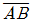
의 방위각과 관측각이 표와 같을 때, 그림에서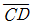
측선의 방위각은?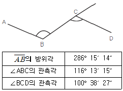
- 270°24′09″
- 270°40′26″
- 301°50′02″
- 301°54′01″
(정답률: 36%)
90. 각 측량기에서 기계점검이나 테스트 시 직교의 조건을 확인하여야 하는 3개의 축에 속하지 않는 것은?
- 편심축
- 시준축
- 수평축
- 연직축
(정답률: 42%)
91. 그림과 같은 편심관측에서 T′는 얼마인가? (단, S1=S2=2㎞, e=0.2m, ø=120°, T=60°)
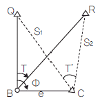
- 59° 59′ 43″
- 60° 00′ 00″
- 60° 00′ 17″
- 60° 00′ 34″
(정답률: 40%)
92. 30m 줄자로 어떤 거리를 관측하였더니 300m 이었다. 이때 줄자가 표준길이보다 1.5㎝가 짧은 것이었다면 관측거리의 정확한 값은?
- 299.85m
- 299.98m
- 300.15m
- 301.⑤m
(정답률: 64%)
93. 거리측량에 있어서 착오(錯誤)에 대한 설명으로 옳지 않은 것은?
- 착오는 오차론에서 주로 취급하고 있다.
- 기록 또는 계산의 오류가 원인이 된다.
- 눈금의 읽음 과실도 그 원인중의 하나이다.
- 일반적으로 착오를 먼저 제거한 다음에 정오차를 보정한다.
(정답률: 38%)
94. 수준측량에서 발생하는 기계적 오차가 아닌것은?
- 삼각대의 느슨함에 따른 기기정치의 불완전
- 표척의 기울기에 따른 오차
- 표척 이음부의 불완전
- 표척눈금의 부정확
(정답률: 50%)
95. 측량의 실시공고에 대한 사항으로 ( )에 알맞은 것은?
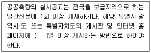
- 7일
- 14일
- 15일
- 30일
(정답률: 55%)
96. 측량기술자의 자격기준과 등급에 관한 설명으로 옳지 않은 것은?
- 기술사는 특급기술자이다.
- 기사 자격을 취득한 사람으로서 7년 이상 측량업무를 수행한 사람은 고급기술자이다.
- 기사 자격을 취득한 사람으로서 3년 이상 측량업무를 수행한 사람은 중급기술자이다.
- 기사 자격 또는 산업기사 자격을 취득한 사람은 초급기술자이다.
(정답률: 46%)
97. 1:5000 지형도의 주곡선 간격은?
- 1m
- 5m
- 10m
- 20m
(정답률: 54%)
98. 기본측량성과나 기본측량기록의 복제나 사본 발급이 제한되는 경우는?
- 개인의 요청에 의해 발급을 제한하는 경우
- 국가안보나 그 밖에 국가의 중대한 이익을 해칠 우려가 있다고 인정되는 경우
- 전산처리에 의해 기록·유지되고 있는 경우
- 공공측량과 일반측량의 성과가 연계되어 있는 경우
(정답률: 49%)
99. 아래 공공측량의 정의 중 밑줄 친 대통령령으로 정하는 측량이란 일정 기준의 측량 중 국토교통부장관이 지정하여 고시하는 측량을 의미한다. 이에 해당되지 않는 것은?
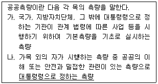
- 측량실시지역의 면적이 1제곱킬로미터 이상인 기준점측량, 지형측량 및 평면측량
- 국토교통부장관이 발행하는 지도의 축척과 같은 축척의 지도 제작
- 촬영지역의 면적이 1제곱킬로미터 이상인 측량용 사진의 촬영
- 측량노선의 길이가 5킬로미터 이상인 기준점 측량
(정답률: 38%)
100. 우리나라 측량의 기준이 되는 세계측지계의 요건으로 옳지 않은 것은?
- 회전타원체의 장반경은 6,378,137미터일 것
- 회전타원체의 중심이 지구의 질량중심과 일치할 것
- 회원타원체의 장축(長軸)이 지구의 자전축과 일치할 것
- 회전타원체의 편평률은 298.257222분의 1A 일 것
(정답률: 56%)